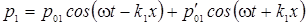
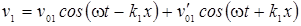
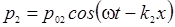
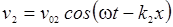
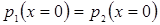
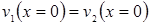
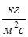

5.1 Отражение звуковой волны от плоской границы при нормальном падении
Рассмотрим плоскую границу двух сред. Пусть волновое сопротивление первой среды равно ρ1с1, а волновое сопротивление второй среды ρ2с2 (здесь ρ – плотность соответствующей среды, а с – скорость звука в данной среде). Выберем систему отсчета таким образом, что ось Ox направлена перпендикулярно границе, которая расположена при x=0, а ось Oy направлена вдоль границы (см. рисунок).
Пусть
плоская гармоническая звуковая волна нормально падает на границу двух сред.
Звуковое давление и колебательная скорость движения частиц в первой среде могут
быть представлены в виде суммы соответствующих характеристик падающей и
отраженной волны:
,
 .
Здесь
ω – циклическая частота колебаний в волне, k1
=
ω/c1
– волновое число в первой среде.
Во
второй среде будет распространяться только прошедшая
волна:
,
,
где
k2
=
ω/c2
– волновое число во второй среде.
На
границе раздела (при x
= 0) в соответствии с третьим законом Ньютона звуковые давления должны быть
равны:
.
Кроме
того, скорость движения частиц первой и второй среды на границе также равны
(вследствие закона неразрывности):
.
Подставляя
выражения для давления и скорости в граничные условия,
получаем:
Между
давлением и колебательной скоростью частиц в звуковой волне существует
соотношение:
где
знак “+” соответствует волне, бегущей в положительном направлении оси, а знак
“-“ – обратной волне.
С
учетом этого граничное условие для скорости запишется в
виде:
Решив
полученную систему уравнений, получим формулы для коэффициентов отражения и
прохождения звуковой волны (по давлению):
Аналогично,
коэффициенты отражения и
прохождения для колебательной скорости равны:
Проанализируем
полученные выражения. Если ρ2с2 > ρ1с1, то есть вторая среда
акустически более “жесткая”, чем первая, то r
> 0, а rv
< 0. Это означает, что при отражении от более “жесткой” среды скорость частиц
меняет фазу на противоположную, а фаза давления остается неизменной. Если
отражение происходит от абсолютно жесткой поверхности (ρ2с2 → ∞), то амплитуда
звукового давления на границе удваивается по сравнению с падающей волной, а
амплитуда колебательной скорости равна нулю. Таким образом, на жесткой стенке
имеет место пучность стоячей волны для давления и узел стоячей волны для
колебательной скорости.
При ρ2с2 < ρ1с1 (вторая среда акустически
более “мягкая”) фаза колебательной скорости не изменяется, а фаза давления
изменяется на π. Это означает, что на абсолютно “мягкой” границе
(ρ2с2 → 0)
будет узел звукового давления и пучность колебательной скорости частиц.
Наконец, при ρ2с2 = ρ1с1 коэффициент отражения
равен нулю. Это означает, что отраженной волны не возникает и звук
беспрепятственно проходит во вторую среду. В этом случае говорят, что среды
согласованы по акустическому сопротивлению.
Так
как между звуковым давлением и интенсивностью звуковой волны существует
соотношение:
то
энергетический коэффициент отражения
звука от границы равен:
Величина,
равная отношению интенсивности звуковой волны, прошедшей во вторую среду, к
интенсивности падающей на границу волны, называется коэффициентом звукопоглощения
поверхности раздела двух сред:
При
нормальном падении звуковой волны на плоскую поверхность коэффициент
звукопоглощения равен:
Рассмотрим
практически важный случай, когда звуковая волна из воздуха (ρ1с1 = ρ0с ≈ 420 )
падает на плоскую поверхность материала с волновым сопротивлением R
=
ρ2с2. В этом
случае формулы для коэффициента отражения и коэффициента звукопоглощения
принимают вид:
Величина
R1 = R/ρ0c
называется волновым сопротивлением, выраженным в долях
волнового сопротивления воздуха, или безразмерным волновым сопротивлением
(импедансом) среды.
Если
среда не является бесконечной и звуковая волна при распространении в ней
поглощается, то волновое сопротивление среды является комплексным
числом:
где
R
– активная часть импеданса, а Y
–
реактивная часть импеданса. Безразмерный импеданс:
Физически
наличие реактивной составляющей импеданса означает, что между звуковым давлением
и колебательной скоростью частиц среды существует фазовый сдвиг. Коэффициент
отражения от среды с комплексным импедансом также является комплексным
числом:
Коэффициент
звукопоглощения при нормальном падении звуковой волны из воздуха на поверхность
с комплексным импедансом равен:
Анализ формулы показывает, что для достижения максимального значения коэффициента звукопоглощения (α = 1) необходимо, чтобы активная часть импеданса поверхности, на которую падает звуковая волна, была равна волновому сопротивлению воздуха (R = ρ0c или R1 = 1), а реактивная часть импеданса Y1 должна стремиться к нулю. При разработке звукопоглощающих материалов и конструкций ориентируются именно на эти показатели.